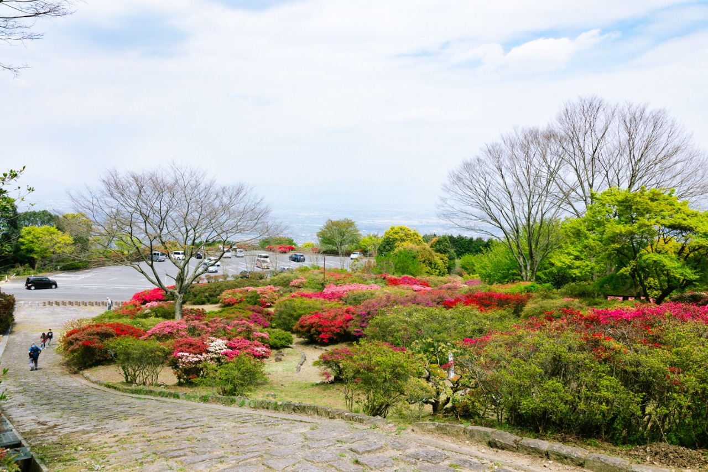
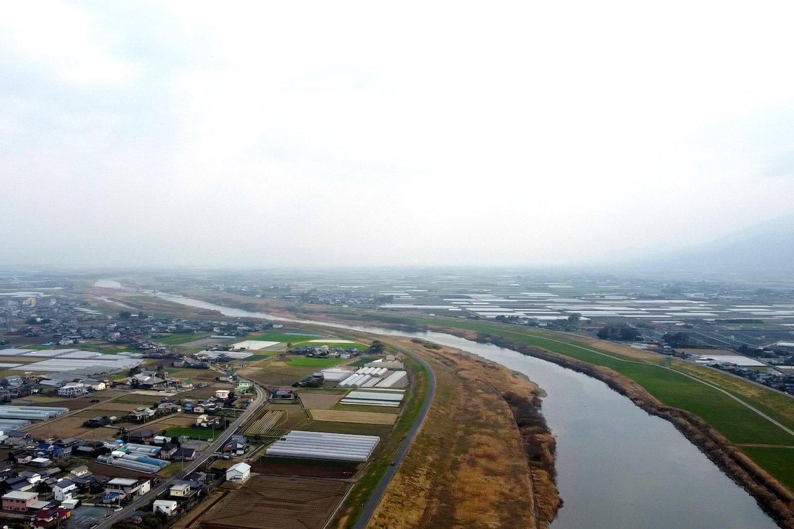

おすすめの自然スポット

久留米森林つつじ公園
約10万本のツツジが植えられている 自然豊かな公園です。 春には色鮮やかなツツジが咲き、 美しい景色を楽しむことができます。

筑後川
久留米市を流れる筑後川は、 豊かな水と自然を感じられる場所です。 川沿いでは季節ごとの景色を 楽しむことができます。

高良山
久留米市を代表する自然豊かな山です。 山からは久留米市街地や筑後平野を 見渡すことができます。
KURUME CITY
豊かな自然と美しい景色に出会える
久留米の魅力をご紹介します。
久留米市には、筑後川をはじめとした豊かな自然や、 四季を感じることができる美しい景観があります。
市街地から自然豊かな場所まで、 久留米ならではの景色を楽しむことができます。

約10万本のツツジが植えられている 自然豊かな公園です。 春には色鮮やかなツツジが咲き、 美しい景色を楽しむことができます。

久留米市を流れる筑後川は、 豊かな水と自然を感じられる場所です。 川沿いでは季節ごとの景色を 楽しむことができます。
久留米市を代表する自然豊かな山です。 山からは久留米市街地や筑後平野を 見渡すことができます。